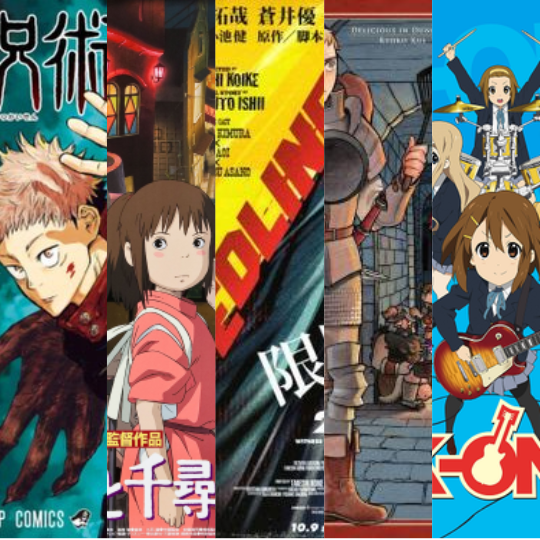
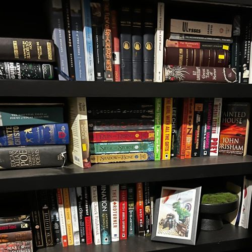
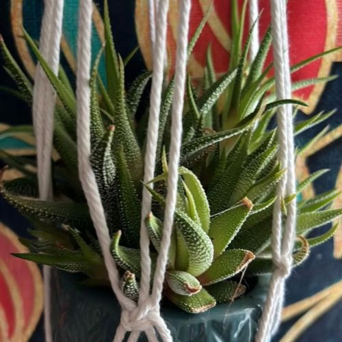
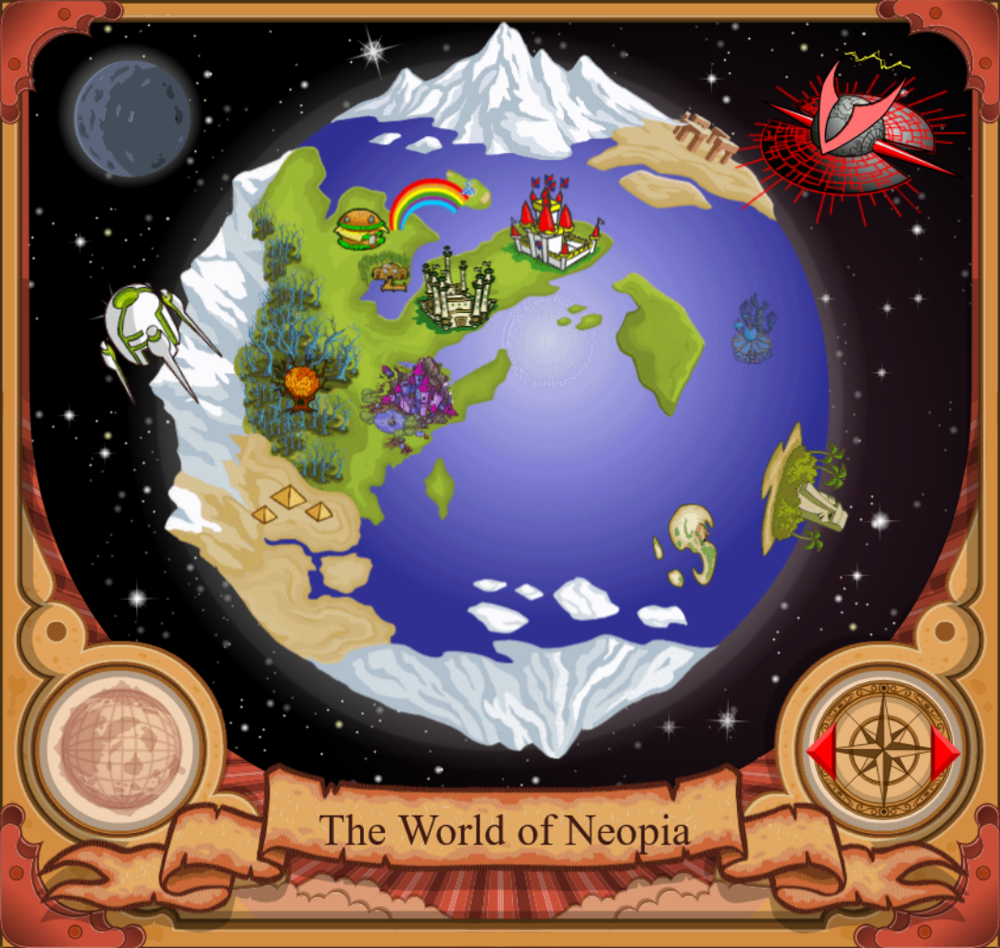
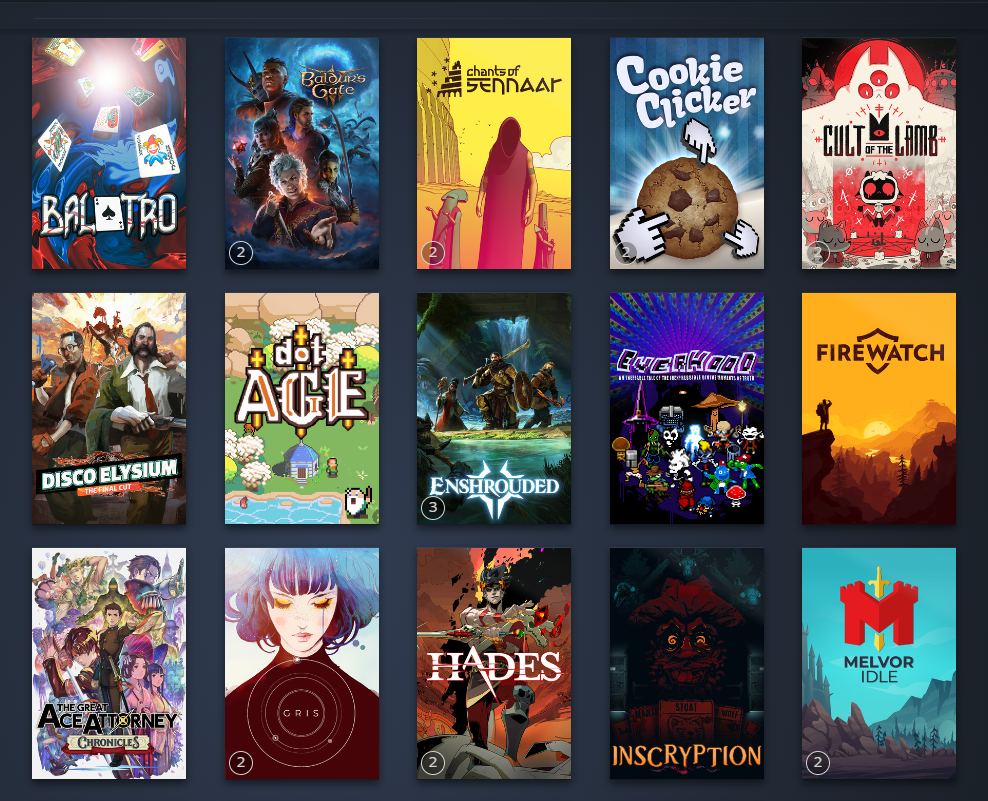

I've been watching anime since I was a kid. My favorites are Redline, Spirited Away, K-On!, Dungeon Meshi, and Jujutsu Kaizen. I'm always down for new recommendations, so feel free to hit me up if you got any!
Currently, I'm reading three books. House of Leaves, Lioness Rampant, and A Court of Mist and Fury. Love reading! I run a book club with tea and sweets. Last time we met, we were reading a finance book.


Very lucky to live around experienced farmers. Ever since I got a house, my goal's to have a beautiful garden! I like picking the weeds the most (does that make me weird?)
Guilty pleasure. Was one of my first introductions to the html and css world. I was admittedly not as attuned to the languages as I am now but it's fun nevertheless. Always a reminder about how much you can do without all the crazy new implementations being brought about nowadays.


I've petered off of gaming a bit but I do enjoy playing here and there. If you like Balatro or Minesweeper, we're besties. Other than that, deckbuilders and story games are usually my go to but I also like games like Clash of Clans and Terraria. Oddly enough, the more wholesome one of the two is CoC. My clan is very cute and supportive, I don't even know who these people are but I love it when a team is totally synced. It really highlights the positive aspects of multiplayer gaming.